tosscoin <- function(n) {
df <- expand.grid(replicate(n, c("H", "T"), simplify = FALSE),
KEEP.OUT.ATTRS = FALSE,
stringsAsFactors = FALSE)
names(df) <- paste0("X", seq_len(n))
return(df)
}DISTRIBUCIONES DISCRETAS EN R
Variable aleatoria discreta

About these lecture notes. These notes introduce discrete random variables, probability mass functions, cumulative distribution functions, expectation, variance, and applications with R.
1 Paquetes
En R podemos encontrar diversas funciones para ello:
expand.griden el paquetebasede R.combnen el paquetecombinat.
2 Funciones
Para nuestros cálculos, utilizaremos la función expand.grid. En este caso, creamos la siguientes CINCO funcione: tosscoin(n), rolldie(n), isin(), urnsamples() y nsamp(). Se describirán a continuación.
2.0.1 Función tosscoin(n)
La idea de esta función es generar el espacio muestral de lanzar una moneda exactamente \(n\) veces, con valores cara (H) y sello (T):
2.0.2 Función rolldie(n)
Con ella se genera el espacio muestral al lanzar un dado exactamente \(n\) veces, con valores de 1 a 6 por lanzamiento.
rolldie <- function(n, sides = 6, makespace = FALSE) {
df <- expand.grid(replicate(n, 1:sides, simplify = FALSE),
KEEP.OUT.ATTRS = FALSE)
names(df) <- paste0("X", seq_len(n))
if (makespace) {
df$prob <- rep(1 / nrow(df), nrow(df)) # Agrega la columna de probabilidad
}
return(df)
}NOTA: En esta función, makespace = TRUE agregará una columna de probabilidades (prob = 1/n) al espacio muestral, para convertirlo en un “objeto tipo espacio de probabilidad”.
2.0.3 Función isin()
Con ella se verifica si ciertos valores están presentes en cada fila de una matriz o data frame. Se puede usar con o sin tener en cuenta el orden.
isin <- function(x, table, ordered = FALSE) {
# Si x es un vector, lo convertimos en una matriz con una sola fila
if (is.vector(x)) {
x <- matrix(x, nrow = 1)
}
# Validación
if (!is.data.frame(x) && !is.matrix(x)) stop("x debe ser un vector, data.frame o matriz")
# Aplicar fila por fila
apply(x, 1, function(row) {
row_vals <- as.character(row)
tab_vals <- as.character(table)
if (ordered) {
# Buscar subsecuencia exacta
len_row <- length(row_vals)
len_tab <- length(tab_vals)
if (len_tab > len_row) return(FALSE)
for (i in 1:(len_row - len_tab + 1)) {
if (all(row_vals[i:(i + len_tab - 1)] == tab_vals)) return(TRUE)
}
return(FALSE)
} else {
# Verificar si todos los valores de 'table' están presentes (sin importar orden)
all(tab_vals %in% row_vals)
}
})
}2.0.4 Función urnsamples()
Esta función genera todas las muestras posibles de una urna según estos cuatro escenarios:
- x: Representa la urna desde la cual se va a hacer el muestreo.
- size: Tamaño de la muestra.
- replace: TRUE, si es con reemplazo; y FALSE, sin reemplazo.
- ordered: TRUE, si es con orden; y FALSE, sin orden.
urnsamples <- function(x, size, ordered = TRUE, replace = FALSE) {
if (ordered) {
# Producto cartesiano
expand.grid(replicate(size, x, simplify = FALSE),
KEEP.OUT.ATTRS = FALSE)
} else {
# Combinaciones sin orden
combn(x, size, simplify = FALSE) |>
do.call(what = rbind)
}
}2.0.5 Función nsamp()
Esta función calcula cuántas formas distintas hay de tomar \(k\) elementos de una población de n elementos, bajo distintas condiciones:
n: Tamaño de la población (elementos disponibles).k: Tamaño de la muestra-replace = FALSE: Sin reemplazo (sin repetir elementos).ordered = TRUE: Orden importa (permuta, no combina).
nsamp <- function(n, k, replace = FALSE, ordered = TRUE) {
if (ordered) {
if (replace) {
return(n^k) # Producto cartesiano con repetición
} else {
return(factorial(n) / factorial(n - k)) # Permutaciones sin repetición
}
} else {
if (replace) {
return(choose(n + k - 1, k)) # Combinaciones con repetición
} else {
return(choose(n, k)) # Combinaciones sin repetición
}
}
}3 Variable aleatoria
Se resalta que una variable aleatoria no es una probabilidad y, generalmente, se simbolizan con las últimas letras mayúsculas de nuestro alfabeto.
Una variable aleatoria \(X\) es una función \(X: \Omega \to R\), siendo \(R\) el conjunto de los números reales.
Las variables aleatorias se clasifican en discretas o continuas.
Las variables discretas son las que tienen una cantidad o finita o (infinita) enumerable de valores.
Las variables continuas tienen una cantidad infinita no enumerable de valores.
En la figura de abajo se muestran algunos ejemplos de ambos tipos de variables.
En las secciones siguientes, solo se explicarán los conceptos relacionados con el caso discreto. El caso continuo se tratará en otros documentos.
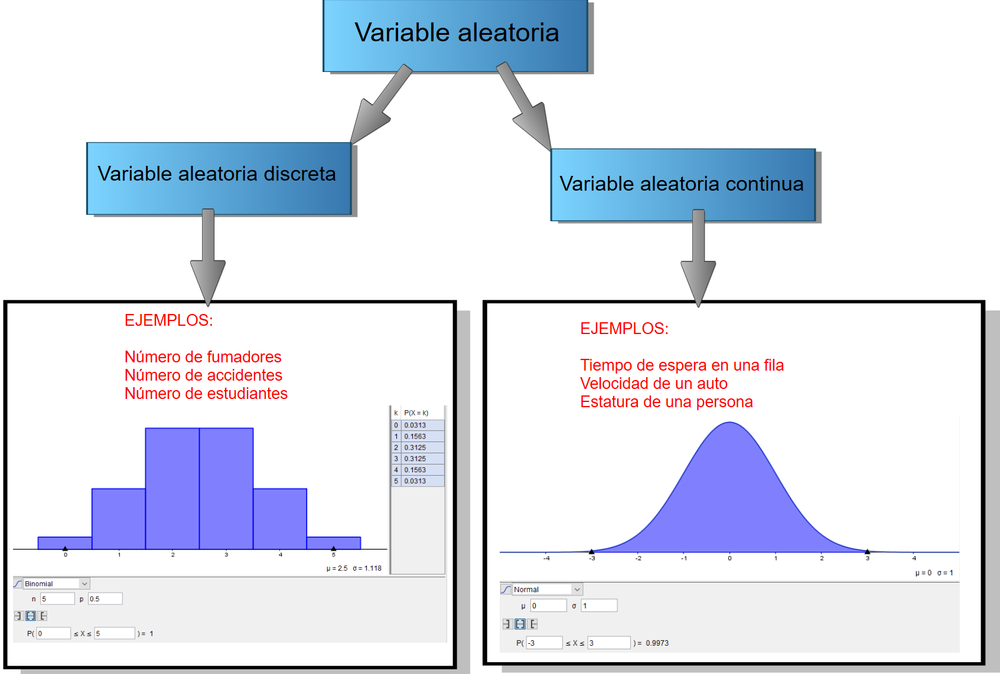
4 Función de probabilidad
4.0.1 Definición de \(f\)
Es una función \(f: R \to [0,1]\) tal que \[f(x) \;= \; \left\{% \begin{array}{ll} P(X=x), & \text{si }x=x_1,x_2,\ldots; \\ 0, & \hbox{de otra forma.} \\ \end{array}% \right. \]
4.0.2 Propiedades de \(f\)
Algunas propiedades de \(f\) son las siguientes:
\(f(x) \geq 0\) para todo valor \(x\) real.
\(\sum\limits_{x\in R} f(x) =1\), siendo \(R\) el conjunto de los números reales.
La gráfica de \(f\) se puede representar a través de un histograma de probabilidad o de un gráfico lineal.
A continuación, algunos ejemplos de representaciones gráficas de \(f\).
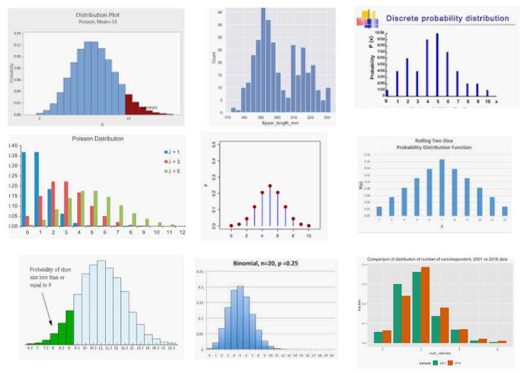
5 Función de distribución acumulada
5.0.1 Definición de \(F\)
Es una función \(F: R \to [0,1]\) definida por \[F(t)\; =\; P(X\leq t) \;= \; \sum\limits_{x; \, x\leq t} f(x), \quad \text{para todo }t\text{ real.}\]
5.0.2 Propiedades de \(F\)
Algunas propiedades de \(f\) son las siguientes:
\(0\leq F(t)\leq 1\).
\(F\) es creciente.
\(F\) es escalonada.
\(F\left(\lim\limits_{t\to\infty} t\right)=1\).
\(F\left(\lim\limits_{t\to-\infty} t\right)=0\).
A continuación, algunos ejemplos de representaciones gráficas de \(F\).
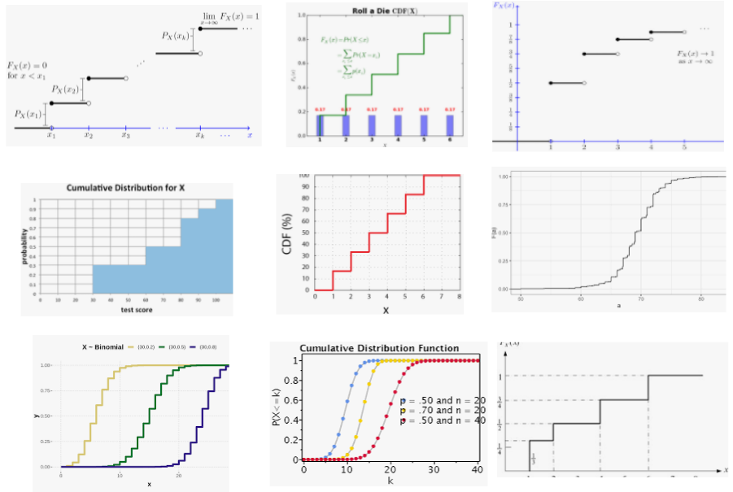
6 Más propiedades
\(P(X=a)\) no siempre es cero.
\(P(a<X\leq b) = F(b)-F(a)\).
\(P(a\leq X\leq b) \ne F(b)-F(a)\).
\(P(a\leq X \leq b) \ne P(a< X \leq b)\).
Si \(a^{-}\) es el valor máximo posible de \(X\) que es estrictamente menor que \(a\), entonces, \[f(a) \,= \; F(a) - F(a^{-})\]
7 Esperanza y varianza
7.0.1 Definiciones
La espezanza de \(X\) se define así: \[\mu\; = \; E(X) \;= \; \sum\limits_k x_k \cdot f(x_k)\]
La varianza de \(X\) se define así: \[\sigma^2 \;= \; V(X) \;= \; \sum\limits_k (x_k-\mu)^2 \cdot f(x_k).\]
7.0.2 Propiedades
Algunas propiedades de la esperanza y varianza son las siguientes:
\(E(aX + b) \,=\, a E(X) \,+\, b\).
\(V(aX + b) \,=\, a^2 V(X)\).
\(V(X)\,=\, E(X^2) \,-\, \big[E(X)\big]^2\), donde \(E(X^2) \;= \; \sum\limits_k x_k^2 \cdot f(x_k)\).
8 Ejemplo: Enunciado
Supóngase que una moneda se lanza 5 veces y sea \(X\) la variable aleatoria que representa el número de caras que resultan.
¿Cuáles son los posibles valores \(k\) de \(X\)?
Halle la probabilidad de que \(X\) tome cada uno de esos valores \(k\) de la parte (a).
Construya la función de probabilidad \(f\) de \(X\).
Haga un bosquejo de la representación gráfica de \(f\).
Construya la función de distribución acumulada \(F\) de \(X\).
Haga un bosquejo de su representación gráfica de \(F\).
Halle la probabilidad de que el número de caras sea menor o igual que 3.
Halle la probabilidad de que el número de caras sea mayor que 2.
Halle la probabilidad de que \(X\) se encuentre entre 1 y 4 (ambos inclusive).
Halle la probabilidad de \(X\) se encuentre entre 1 y 4 (ambos no inclusive).
Halle la esperanza de \(X\).
Halle la esperanza de \(X^2\).
Encuentre la varianza de \(X\).
9 Ejemplo: Solución
9.0.1 Solución parte (a)
Al lanzar 5 caras, los elementos y el tamaño del espacio muestral \(\Omega\) se pueden encontrar así:
Omega <- tosscoin(5) #A) Espacio muestralEl número de elementos que tiene el espacio muestral \(\Omega\) es:
\[\#\Omega= 1+5+10+10+5+1 = 32, \quad \mbox{o, que es lo mismo}, \quad \# \Omega = 2^5 = 32\]
Comprobando con R, vemos que \(\Omega\) tiene 32 elementos:
w <- nrow(Omega); w #B) Tamaño del espacio muestral## [1] 32En forma resumida, los elementos de \(\Omega\) y los posibles valores de \(X\) se encuentran en la tabla de abajo:
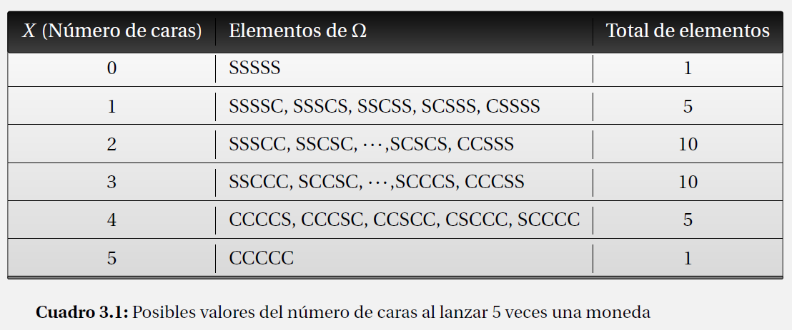
El total de elementos que aparecen en la última columna se hallan en R de la siguiente manera:
k <- c(0, 1, 2, 3, 4, 5) #C) Número de caras
Conteo <- choose(5,k); Conteo #D) ## [1] 1 5 10 10 5 1En conclusión, los posibles valores de \(X\) son: 0, 1, 2, 3, 4, 5.
9.0.2 Solución parte (b)
Las probabilidades solicitadas se describen a continuación:
Probabilidad de que salga 0 cara: \[P(X=0) = P(SSSSS) = \frac{1}{32} = 0.03125\]
Probabilidad de que salga 1 cara: \[P(X=1) = P(SSSSC, SSSCS, SSCSS, SCSSS, CSSSS) = \frac{5}{32} = 0.15625\]
Probabilidad de que salgan 2 caras: \[P(X=2) = P(SSSCC, SSCSC, \cdots,SCSCS, CCSSS) = \frac{10}{32} = 0.3125\]
Probabilidad de que salgan 3 caras: \[P(X=3) = P(SSCCC, SCCSC, \cdots,SCCCS, CCCSS) = \frac{10}{32} = 0.3125\]
Probabilidad de que salgan 4 caras: \[P(X=4) = P(CCCCS, CCCSC, CCSCC, CSCCC, SCCCC) = \frac{5}{32} = 0.15625\]
Probabilidad de que salgan 5 caras: \[P(X=5) = P(CCCCC) = \frac{1}{32}= 0.03125\]
En R se pueden calcular así:
probabilidad_b <- Conteo/w
probabilidad_b## [1] 0.03125 0.15625 0.31250 0.31250 0.15625 0.03125Estas probabilidades se pueden resumir en la tabla que se indica abajo:
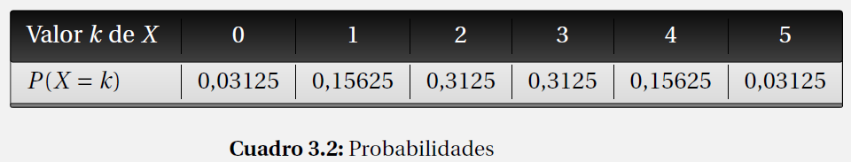
9.0.3 Solución parte (c)
Debido a que \(f(k) = P(X=k)\), la función de probabilidad \(f\) coincide con las probabilidades halladas en el inciso anterior, como se muestra en la tabla de abajo.
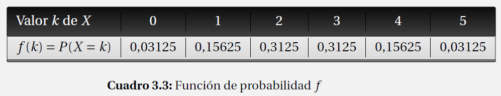
En R se pueden calcular así:
f <- probabilidad_b; f## [1] 0.03125 0.15625 0.31250 0.31250 0.15625 0.031259.0.4 Solución parte (d)
El bosquejo de la gráfica de \(f\) se puede representar de dos maneras: como un gráfico de líneas o como un histograma de probabilidad.
plot(k, f, type="h", main= "Gráfico de puntos",xlab = "Número de caras",
ylab = "Probabilidad que esto ocurra" )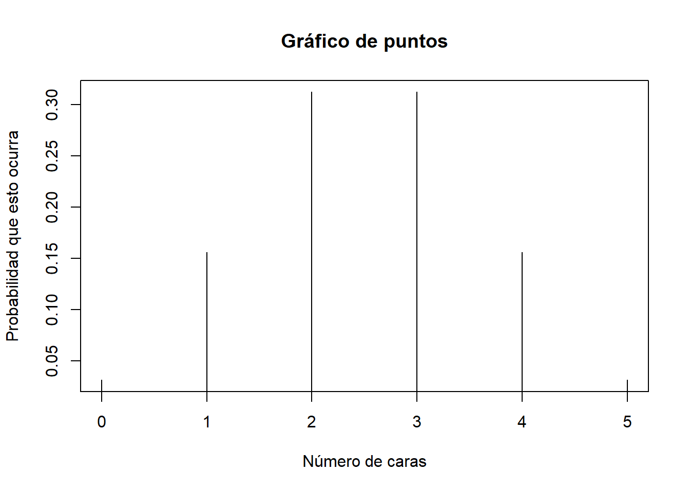
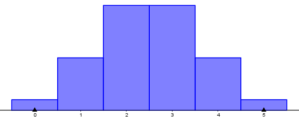
9.0.5 Solución parte (e)
Recordemos que la función de distribución acumulada \(F\) se define como: \[F(t)\; =\; P(X\leq t) \;= \; \sum\limits_{x; \, x\leq t} f(x), \quad \text{para todo }t\text{ real.}\]
Hallaremos \(F\) en tres pasos:
PRIMER PASO: Consideremos solo los valores de \(X\), que son 0, 1, 2, 3, 4, 5.
\[\begin{eqnarray*} F(0) &=& P(X\leq 0) = P(X=0) = f(0) =0.03125. \\ && \\ F(1) &=& P(X\leq 1) = P(X=0)+P(X=1) = f(0)+ f(1) = 0,03125 + 0,15625 = 0.1875.\\ && \\ F(2) &=& P(X\leq 2) = P(X=0)+\cdots +P(X=2) = f(0) + \cdots +f(2) = 0.03125 + \cdots + 0.3125= 0.5.\\ &&\\ F(3) &=& P(X\leq 3) = P(X=0)+\cdots +P(X=3) = f(0) + \cdots +f(3)= 0.03125 +\cdots + 0.3125= 0.8125.\\ && \\ F(4) &=& P(X\leq 4) = P(X=0)+\cdots +P(X=4) = f(0) + \cdots +f(4)= 0.03125 +\cdots + 0.15625= 0.96875.\\ && \\ F(5) &=& P(X\leq 5) = P(X=0)+\cdots +P(X=5) = f(0) + \cdots +f(5)= 0.03125 +\cdots + 0.03125= 1. \end{eqnarray*}\]
SEGUNDO PASO: Consideremos números reales \(t\) diferente de los valores de \(X\) (0, 1, 2, 3, 4, 5) y utilizaremos siempre valores de prueba (el que usted quiera seleccionar). Aquí consideraremos 7 regiones.
Región 1: Supongamos que \(t<0\):
Tomamos un valor de prueba que esté en este intervalo. Por ejemplo, puede ser -2:
\[F(-2) = P(X\leq -2) = 0\]
ya que no hay valores de \(X\) que sean negativos.
Región 2: Supongamos que \(0<t<1\):
Tomamos un valor de prueba que esté en este intervalo. Por ejemplo, puede ser 0.6:
\[F(0.6) = P(X\leq 0.6) = P(X=0) = 0.03125\]
ya que el único valor de \(X\) menor o igual que 0.6 es 0.
Región 3: Supongamos que \(1<t<2\):
Tomamos un valor de prueba que esté en este intervalo. Por ejemplo, puede ser 1.2:
\[F(1.2) = P(X\leq 1.2) = P(X=0)+P(X=1) = 0.1875\]
ya que los únicos valores de \(X\) menores o iguales que 1.2 son 0 y 1.
Región 4: Supongamos que \(2<t<3\):
Tomamos un valor de prueba que esté en este intervalo. Por ejemplo, puede ser 2.4:
\[F(2.4) = P(X\leq 2.4) = P(X=0)+\cdots +P(X=2) = 0.5\]
ya que los únicos valores de \(X\) menores o iguales que 2,4 son 0 , 1 y 2.
Región 5: Supongamos que \(3<t<4\):
Tomamos un valor de prueba que esté en este intervalo. Por ejemplo, puede ser 3.5:
\[F(3.5) = P(X\leq 3.5) = P(X=0)+\cdots +P(X=3) = 0.8125\]
ya que los únicos valores de \(X\) menores o iguales que 3.5 son 0, 1, 2 y 3.
Región 6: Supongamos que \(4<t<5\):
Tomamos un valor de prueba que esté en este intervalo. Por ejemplo, puede ser 4.1:
\[F(4.1) = P(X\leq 4.1) = P(X=0)+\cdots +P(X=4) = 0.96875\]
ya que los únicos valores de \(X\) menores o iguales que 4.1 son 0, 1, 2, 3 y 4.
Región 7: Supongamos que \(5<t\):
Tomamos un valor de prueba que esté en este intervalo. Por ejemplo, puede ser 7:
\[F(7) = P(X\leq 7) = P(X=0)+\cdots +P(X=5) = 1\]
ya que todos los valores de \(X\) son menores o iguales que 7.
TERCER PASO: Reunimos los pasos 1 y 2:
\[F(t) = \left\{ \begin{array}{ll} 0; & \text{si }t<0; \\ 0.03125; & \text{si }0\leq t<1; \\ 0.1875; & \text{si }1\leq t<2; \\ 0.5; & \text{si }2\leq t<3; \\ 0.8125; & \text{si }3\leq t<4; \\ 0.96875; & \text{si }4\leq t<5. \\ 1; & \text{si }5\leq t. \end{array} \right.\]
En R:
Dist_Acum <- cumsum(f)
Dist_Acum## [1] 0.03125 0.18750 0.50000 0.81250 0.96875 1.000009.0.6 Solución parte (f)
El bosquejo de la gráfica de \(F\) se puede representar de dos maneras: como un gráfico de líneas o como una gráfica de una función escalonada.
plot(k, Dist_Acum, type="b", main= "Gráfico de la distribución acumulada",xlab = "Número de caras",
ylab = "Probabilidad acumulada que esto ocurra" )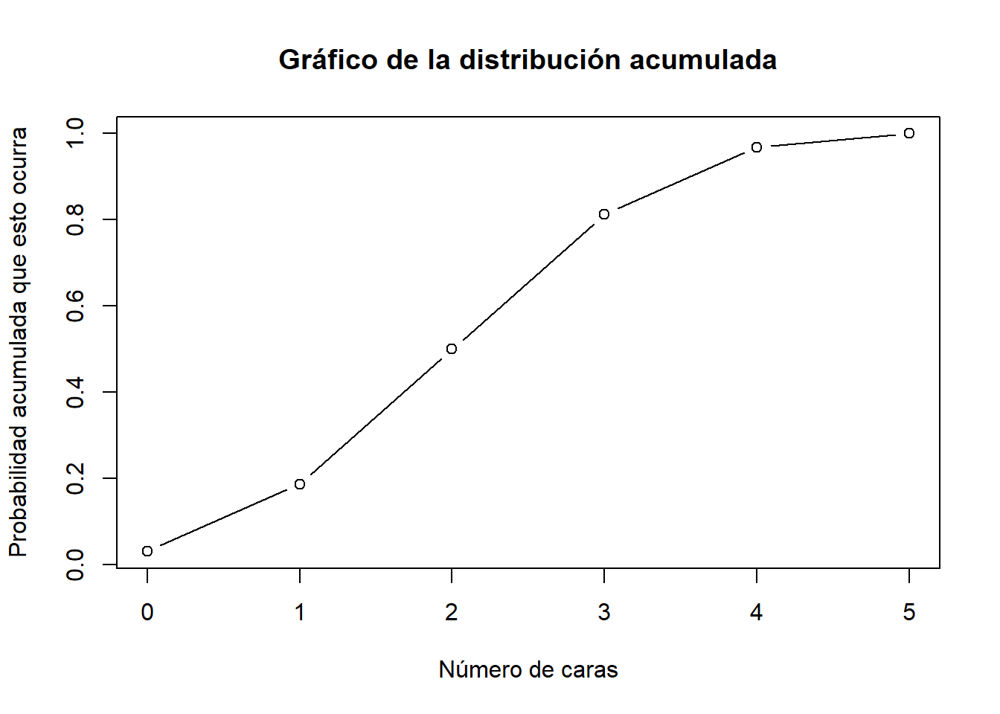
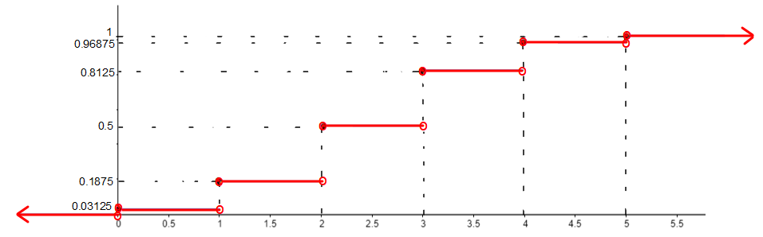
9.0.7 Solución parte (g)
La probabilidad de que el número de caras sea menor o igual que 3 es: \[P(X\leq 3) \; = \; F(3) \; = \; 0.8125 \] En R:
t <- 3
probabilidad_g <- Dist_Acum[t+1]
probabilidad_g## [1] 0.81259.0.8 Solución parte (h)
La probabilidad de que el número de caras sea mayor que 2 es: \[P(X>2) \; = \; 1- P(X\leq 2) \; = \; 1- F(2) \; = \; 1- 0.5 \; = \; 0.5\]
t <- 2
probabilidad_h <- 1- Dist_Acum[t+1]
probabilidad_h## [1] 0.59.0.9 Solución parte (i)
La probabilidad de que \(X\) se encuentre entre 1 y 4 (ambos inclusive) se puede hallar de dos maneras:
Primera forma: Utilizando \(f\).
\[P(1 \leq X \leq 4) \; = \; P(X=1, 2, 3, 4)\; = \; f(1) + f(2) + f(3) + f(4)\; = 0.9375\]
En R:
x <- 1:4
c <- f[x+1]
probabilidad_i <- sum(c)
probabilidad_i## [1] 0.9375Segunda forma: Utilizando \(F\).
\[\begin{eqnarray*} P(1 \leq X \leq 4) &=& P(X=1, 2, 3, 4)\; = \; P(X=0, 1, 2, 3, 4)\, - \, P(X=0) \\ &=& P(X\leq 4) \, - \, P(X\leq 0) \; = \; F(4) \, - \, F(0) \; = \; 0.96875 \, - \, 0.03125 \; = \; 0.9375 \end{eqnarray*}\]
a <- 0
b <- 4
probabilidad_i <- Dist_Acum[b + 1] - Dist_Acum[a +1]
probabilidad_i## [1] 0.93759.0.10 Solución parte (j)
La probabilidad de \(X\) se encuentre entre 1 y 4 (ambos no inclusive) se puede hallar de dos maneras:
Primera forma: Utilizando \(f\). \[P(1 < X < 4) \; = \; P(X= 2, 3)\; = \; f(2) + f(3) \; = 0.625\]
En R:
x <- 2:3
c <- f[x+1]
probabilidad_j <- sum(c)
probabilidad_j## [1] 0.625Segunda forma: Utilizando \(F\). \[\begin{eqnarray*} P(1 < X < 4) &=& P(X=2, 3)\; = \; P(X=0, 1, 2, 3)\, - \, P(X=0, 1) \\ &=& P(X\leq 3) \, - \, P(X\leq 1) \; = \; F(3) \, - \, F(1) \; = \; 0.8125 \, - \, 0.1875 \; = \; 0.625 \end{eqnarray*}\]
a <- 1
b <- 3
probabilidad_i <- Dist_Acum[b + 1] - Dist_Acum[a +1]
probabilidad_i## [1] 0.6259.0.11 Solución parte (k)
Recuerde que la esperanza de \(X\) está definida por \[E(X) \;= \; \sum\limits_k k \cdot f(k)\]
En este ejemplo, \[\begin{eqnarray*} E(X) &=& (0)f(0) + (1) f(1)+ \cdots + (5)f(5) \\ &=& 0.00000 + 0.15625 + 0.62500 + 0.93750+ 0.62500 + 0.15625 \\ &=& 2.5 \end{eqnarray*}\]
En R:
E <- k*f
Esperanza <- sum(E)
Esperanza## [1] 2.59.0.12 Solución parte (l)
La esperanza de \(X^2\) se calcula por \[E(X^2) \;= \; \sum\limits_{k=1}^K k^2 \cdot f(k)\]
En este ejemplo,
\[\begin{eqnarray*} E(X^2) &=& (0^2)f(0) + (1^2) f(1)+ \cdots + (5^2)f(5) \\ &=& 0.00000 + 0.15625 + 1.25000 + 2.81250 + 2.50000 + 0.78125\\ &=& 7.5 \end{eqnarray*}\]
En R:
E2 <- k^2*f
Esperanza2 <- sum(E2)
Esperanza2## [1] 7.59.0.13 Solución parte (m)
Recuerde que la varianza de \(X\) se puede calcular así (de dos maneras equivalentes):
\[V(X) \;= \; \sum\limits_{k=1}^K (k-E(X))^2 \cdot f(k)\,=\, E(X^2) \,-\, \big[E(X)\big]^2\]
En este ejemplo, sin utilizar la propiedad, obtenemos:
\[\begin{eqnarray*} V(X) &=& \sum\limits_k (k-E(X))^2 \cdot f(k)\\ &=& 0.1953125 + 0.3515625 + 0.0781250 + 0.0781250 + 0.3515625 + 0.1953125 \\ &=& 1.25 \end{eqnarray*}\]
En R:
V <- (k-Esperanza)^2*f
Varianza <- sum(V)
Varianza## [1] 1.25Con la propiedad se obtiene el mismo resultado:
\[V(X) \,=\, E(X^2) \,-\, \big[E(X)\big]^2 \;= \; 7.5 - (2.5)^2 \;= \;1.25\]
En R:
Varianza <- Esperanza2 - (Esperanza)^2
Varianza## [1] 1.2510 Distribuciones especiales discretas: Resumen
Las distribuciones discretas más importantes son:
Uniforme discreta
De Bernoulli
Binomial
De Poisson
Hipergeométrica
Binomial negativa
Geométrica
En otros documentos se explicarán cada una de ellas.
11 Ejercicios
Realizar los ejercicios que se indican abajo. Interprete los resultados hallados.
NOTA: Al final de las sección 3.1 a 3.3 de la referencia 2 (ver abajo), se pueden revisar más ejercicios.
¿Son las siguientes afirmaciones verdaderas o falsas? Justifique cada respuesta.
- Toda variable aleatoria es un número.
- Si \(f\) es la función de probabilidad de una variable aleatoria discreta \(X\) y 0 es un posible valor de \(X\), entonces, \(f(0)=0\).
- Para cualquier variable aleatoria discreta \(X\) se cumple que \(P(X=1)=1\), en donde 1 es un posible valor de \(X\).
- Si \(F\) es la función de distribución acumulada de una variable aleatoria \(X\) discreta, entonces, \(F\) es una función escalonada.
- Si \(X\) es una variable aleatoria discreta con función de distribución acumulada \(F\), entonces, se cumple que \(P(3\leq X<5)=F(5)-F(3)\).
- Si \(X\) es cualquier variable aleatoria y si la variable aleatoria \(X+4\) tiene esperanza 1, entonces, la esperanza de \(X\) es
Repita el ejemplo 1 suponiendo que la moneda se lanza 2 veces.
Repita el ejemplo 1 suponiendo que la moneda se lanza 3 veces.
Repita el ejemplo 1 suponiendo que la moneda se lanza 4 veces.
Repita el ejemplo 1 suponiendo que la moneda se lanza 6 veces.
Una pizzería, que atiende pedidos por correo, tiene cinco líneas telefónicas. Sea \(X\) la variable aleatoria que representa al número de líneas ocupadas en un momento específico. Supongamos que la función de probabilidad \(f\) de \(X\) está dada en tabla de abajo.
- Calcule la probabilidad del siguiente evento: \(A =\) “a lo sumo 2 líneas están en uso”.
- Calcule la probabilidad del siguiente evento: \(B =\) “menos de 4 líneas están en uso”.
- Calcule la probabilidad del siguiente evento: \(C =\) “por lo menos 3 líneas están en uso”.
- Calcule la probabilidad del siguiente evento: \(D =\) “entre 2 y 4 (ambos inclusive) líneas están en uso”.
- Haga un bosquejo gráfico de \(f\).
- Halle la función de distribución acumulada \(F\) de \(X\) y haga un bosquejo gráfico.
- Halle la esperanza de \(X\).
- Halle la varianza de \(X\).
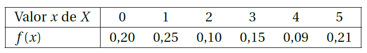
Considere la situación del ejercicio 6. Suponga que \(Y\) representa la variable aleatoria que representa al número de líneas desocupadas en un momento específico.
- Halle la función de probabilidad de \(Y\) y haga un bosquejo gráfico de \(f\).
- Calcule la probabilidad del siguiente evento: \(E =\) “entre 2 y 5 (ambos inclusive) líneas no están en uso”.
- Calcule la probabilidad del siguiente evento: \(F =\) “por lo menos 3 líneas no están en uso”.
- Halle la función de distribución acumulada \(F\) de \(Y\) y haga un bosquejo gráfico.
- Halle la esperanza de \(Y\).
- Halle la varianza de \(Y\).
La función de probabilidad de la variable aleatoria \(X\) que representa al número de imperfecciones por 4 metros de un papel especial en rollos continuos de ancho uniforme, está dada por la tabla de abajo.
- Haga un bosquejo gráfico de \(f\).
- Halle la función de distribución acumulada \(F\) de \(X\) y represéntela gráficamente.
- Halle la esperanza de \(X\).
- Halle la varianza de \(X\).
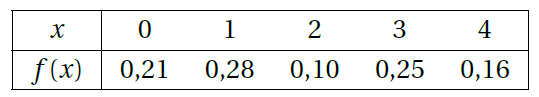
Una fabricante de lapiceros tiene un programa de control de calidad que incluye la inspección de lapiceros recibidos para revisar que no tengan defectos. Supongamos que, en cierto día, él recibe lapiceros en lotes de cinco y se seleccionan dos lapiceros de un lote para inspeccionarlos. Podemos representar los posibles resultados del proceso de selección por pares. Por ejemplo, el par \((3,4)\) representa la selección de los lapiceros 3 y 4 para inspeccionarlos.
- Haga una lista de los resultados diferentes.
- Supongamos que los lapiceros 3 y 4 son los únicos defectuosos de un lote de cinco y se van a escoger dos lapiceros al azar. Defina la variable aleatoria \(X\) como el número de de lapiceros defectuosos observado entre los inspeccionados. Encuentre la función de probabilidad de \(X\) y represéntela gráficamente.
- Encuentre la función de distribución acumulada \(F\) de \(X\) y represéntela gráficamente.
- Halle la esperanza de \(X\).
- Halle la varianza de \(X\).
Considere la situación del ejercicio 9. Suponga que \(Y\) representa la variable aleatoria que representa al número de lapiceros no defectuosos.
- Halle la función de probabilidad de \(Y\) y haga un bosquejo gráfico de \(f\).
- Halle la función de distribución acumulada \(F\) de \(Y\) y haga un bosquejo gráfico.
- Halle la esperanza de \(Y\).
- Halle la varianza de \(Y\).
Al invertir en unas acciones particulares, una persona puede tener una ganancia en un año de $8.000.000 con probabilidad de 0,4 o tener una pérdida de $2.000 con probabilidad de 0,6. ¿Cuál es la ganancia esperada de esta persona? Interprete su respuesta.
Anexos
A. Tablas estadísticas: Click derecho aquí.
B. Apéndice de tablas y diagramas: Click aquí.
Texto guía
- Llinás, H. (2014). Introducción a la teoría de probabibilidad. Barranquilla: Editorial Universidad del Norte.
Bibliografía complementaria
LLinás, H., Rojas, C. (2005). Estadística descriptiva y distribuciones de probabilidad. Barranquilla: Editorial Universidad del Norte.
Consultar mis Notas de clase en Estadística I.
Consultar mis Notas de clase: Cap. 2 (Descriptiva).
Consultar mis otras Notas de clase.
Consultar el documento Enlaces y materiales de ayuda.
If you found any errors or have suggestions, please write to hllinas@uninorte.edu.co. Thank you.